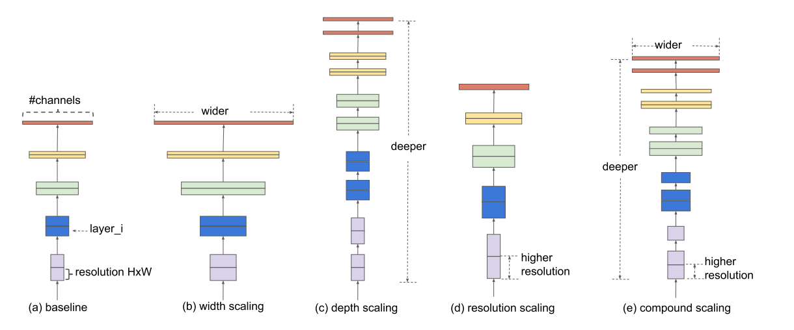
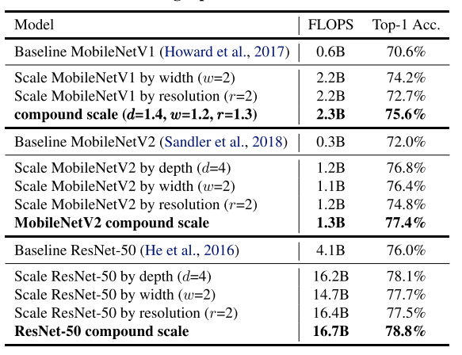
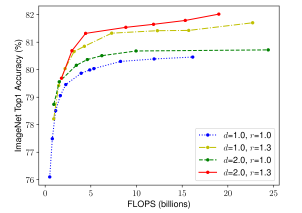
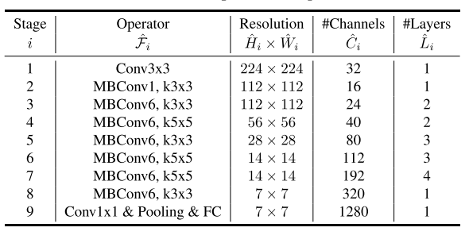
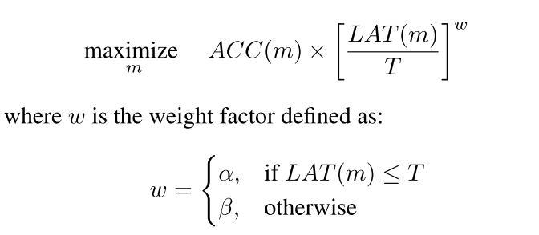
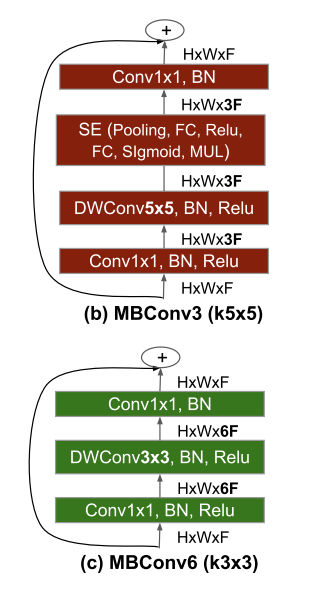
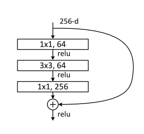

EfficientNet
Rethinking Model Scaling for Convolutional Neural Networks
Look at the current SOTA, with top-1 accuracy of 88.5% on ImageNet.
1 Introduction
It brings me great pleasure as I begin writing about EfficientNets for two reasons: 1. At the time of writing, Fixing the train-test resolution discrepancy: FixEfficientNet (family of EfficientNet) is the current State of Art on ImageNet with 88.5% top-1 accuracy and 98.7% top-5 accuracy. 2. This blog post also sets up the base for future blog posts on Self-training with Noisy Student improves ImageNet classification, Fixing the train-test resolution discrepancy and Fixing the train-test resolution discrepancy: FixEfficientNet.
In this blog post, in The “Why” section, we take a look at the superior performance of EfficientNets compared to their counterparts and understand why we are looking into EfficientNets and “why” they are totally worth your time.
Next, in “The How” section, we start to unravel the magic inside EfficientNets. Particularly, we look at two main contributions from the research paper: 1. Compound Scaling 2. The EfficientNet Architecture (developed using Neural Architecture Search)
Having introduced the two contributions in The “How”, we the compare the conventional methods of scaling with Compound Scaling approach in Comparing Conventional Methods with Compound Scaling.
Finally we look at the details of the EfficientNet Architecture in The EfficientNet Architecture using NAS and learn how the authors used Nerual Architecture Search (NAS) to get EfficientNet-B0 architecture and scaled it using Compound Scaling technique to get EfficientNet B1-B7.
So, let’s get started!
2 The “WHY”?
In this section we understand “why” EfficientNets are totally worth your time.
fig-1 below summarizes “why” we could a learn a lot by understanding the EfficientNet Architecture.

As we can see from fig-1, EfficientNets significantly outperform other ConvNets. In fact, EfficientNet-B7 achieved new state of art with 84.4% top-1 accuracy outperforming the previous SOTA GPipe but being 8.4 times smaller and 6.1 times faster.
From the paper, > EfficientNet-B7 achieves state- of-the-art 84.4% top-1 / 97.1% top-5 accuracy on ImageNet, while being 8.4x smaller and 6.1x faster on inference than the best existing ConvNet. Our EfficientNets also transfer well and achieve state-of-the-art accuracy on CIFAR-100 (91.7%), Flowers (98.8%), and 3 other transfer learning datasets, with an order of magnitude fewer parameters.
The great thing about EfficientNets is that not only do they have better accuracies compared to their counterparts, they are also lightweight and thus, faster to run.
Having looked at their superior accuracies and faster runtimes, let’s start to unravel the magic step-by-step.
3 The “HOW”?
So “how” did the authors Mingxing Tan and Quoc V. Le make EfficientNets perform so well and efficiently?
In this section we will understand the main idea introduced in the research paper - Compound Scaling.
3.1 Compound Scaling
Before the EfficientNets came along, the most common way to scale up ConvNets was either by one of three dimensions - depth (number of layers), width (number of channels) or image resolution (image size).
EfficientNets on the other hand perform Compound Scaling - that is, scale all three dimensions while mantaining a balance between all dimensions of the network.
From the paper: > In this paper, we want to study and rethink the process of scaling up ConvNets. In particular, we investigate the central question: is there a principled method to scale up ConvNets that can achieve better accuracy and efficiency? Our empirical study shows that it is critical to balance all dimensions of network width/depth/resolution, and surprisingly such balance can be achieved by simply scaling each of them with constant ratio. Based on this observation, we propose a simple yet effective compound scaling method. Unlike conventional practice that arbitrary scales these factors, our method uniformly scales network width, depth, and resolution with a set of fixed scaling coefficients.
This main difference between the scaling methods has also been illustrated in fig-2 below.

In fig-2 above, (b)-(d) are conventional scaling that only increases one dimension of network width, depth, or resolution. (e) is the proposed compound scaling method that uniformly scales all three dimensions with a fixed ratio.
This main idea of Compound Scaling really set apart EfficientNets from its predecessors. And intuitively, this idea of compound scaling makes sense too because if the input image is bigger (input resolution), then the network needs more layers (depth) and more channels (width) to capture more fine-grained patterns on the bigger image.
In fact, this idea of Compound Scaling also works on existing MobileNet and ResNet architectures.
From table-1 below, we can clearly see, that the versions of MobileNet and ResNet architectures scaled using the Compound Scaling approach perform better than their baselines or also those architectures that were scaled using conventional methods - (b)-(d) in fig-2.

Thus, it is safe to summarize - Compound Scaling works! But, we’re not done yet, there’s more magic to be unraveled.
3.2 Neural Architecture Search
Since we are looking at the “how” - while so far we know Compound Scaling was the main idea introduced - the authors found that having a good baseline network is also critical.
It wasn’t enough to achieve such great performance by picking up any existing architecture and applying Compound Scaling to it. While the authors evaluated the scaling method using existing ConvNets (for example - ResNets and MobileNets in table-1 before), in order to better demonstrate the effectiveness of this scaling method, they also developed a new mobile-size baseline, called EfficientNet using Neural Architecture Search.
We understand how they did this is in a lot more detail in a later section of this blog post.
3.3 Main Contributions - CS & NAS
Therefore, to summarize the two main contributions of this research paper were the idea of Compound Scaling and using Neural Architecture Search to define a new mobile-size baseline called EfficientNet. We look at both model scaling and the EfficientNet architecture in a lot more detail in the following sections.
4 Comparing Conventional Methods with Compound Scaling
In this section we look at various ways of scaling neural networks in a lot more detail and compare then with the Compound Scaling approach.
Basically, the authors of EfficientNet architecture ran a lot of experiments scaling depth, width and image resolution and made two main observations:
- Scaling up any dimension of network width, depth, or resolution improves accuracy, but the accuracy gain diminishes for bigger models.
- In order to pursue better accuracy and efficiency, it is critical to balance all dimensions of network width, depth, and resolution during ConvNet scaling.
, Depth(d) and Resolution(r)")
These two observations can also be seen in fig-3. Now, let’s look at the effects of scaling single dimensions on a ConvNet in more detail below.
4.1 Depth
Scaling network depth (number of layers), is the most common way used by many ConvNets.
With the advancements in deep learning (particularly thanks to Residual Connections, BatchNorm), it has now been possible to train deeper neural networks that generally have higher accuracy than their shallower counterparts. The intuition is that deeper ConvNet can capture richer and more complex features, and generalize well on new tasks. However, deeper networks are also more difficult to train due to the vanishing gradient problem. Although residual connections and batchnorm help alleviate this problem, the accuracy gain of very deep networks diminishes. For example, ResNet-1000 has similar accuracy as ResNet-101 even though it has much more layers.
In fig-3 (middle), we can also see that ImageNet Top-1 Accuracy saturates at d=6.0 and no further improvement can be seen after.
4.2 Width
Scaling network width - that is, increasing the number of channels in Convolution layers - is most commonly used for smaller sized models. We have seen applications of wider networks previously in MobileNets, MNasNet.
While wider networks tend to be able to capture more fine-grained features and are easier to train, extremely wide but shallow networks tend to have difficul- ties in capturing higher level features.
Also, as can be seen in fig-3 (left), accuracy quickly saturates when networks become much wider with larger w.
4.3 Resolution
From the paper: > With higher resolution input images, ConvNets can potentially capture more fine-grained patterns. Starting from 224x224 in early ConvNets, modern ConvNets tend to use 299x299 (Szegedy et al., 2016) or 331x331 (Zoph et al., 2018) for better accuracy. Recently, GPipe (Huang et al., 2018) achieves state-of-the-art ImageNet accuracy with 480x480 resolution. Higher resolutions, such as 600x600, are also widely used in object detection ConvNets (He et al., 2017; Lin et al., 2017).
Increasing image resolution to help improve the accuracy of ConvNets is not new - This has been termed as Progressive Resizing in fast.ai course. (explained here).
It is also beneficial to ensemble models trained on different input resolution as explained by Chris Deotte here.
fig-3 (right), we can see that accuracy increases with an increase in input image size.
By studying the indivdiual effects of scaling depth, width and resolution, this brings us to the first observation which I post here again for reference:
Scaling up any dimension of network width, depth, or resolution improves accuracy, but the accuracy gain diminishes for bigger models.
4.4 Compound Scaling

Each dot in a line in fig-4 above denotes a model with different width(w). We can see that the best accuracy gains can be obvserved by increasing depth, resolution and width. r=1.0 represents 224x224 resolution whereas r=1.3 represents 299x299 resolution.
Therefore, with deeper (d=2.0) and higher resolution (r=2.0), width scaling achieves much better accuracy under the same FLOPS cost.
This brings to the second observation:
In order to pursue better accuracy and efficiency, it is critical to balance all dimensions of network width, depth, and resolution during ConvNet scaling.
Having looked at Compound Scaling, we will now look at how the authors used neural Architecture Search to get mobile-size network that they named EfficientNet.
5 The EfficientNet Architecture using NAS
The authors used Neural Architecture Search approach similar to MNasNet research paper. This is a reinforcement learning based approach where the authors developed a baseline neural architecture Efficient-B0 by leveraging a multi-objective search that optimizes for both Accuracy and FLOPS. From the paper:
Specifically, we use the same search space as (Tan et al., 2019), and use ACC(m)×[FLOPS(m)/T]w as the optimization goal, where
ACC(m)andFLOPS(m)denote the accuracy and FLOPS of modelm,Tis the target FLOPS andw=-0.07is a hyperparameter for controlling the trade-off between accuracy and FLOPS. Unlike (Tan et al., 2019; Cai et al., 2019), here we optimize FLOPS rather than latency since we are not targeting any specific hardware device.
The EfficientNet-B0 architecture has been summarized in table-2 below:

The MBConv layer above is nothing but an inverted bottleneck block with squeeze and excitation connection added to it. We will learn more about this layer in this section of the blog post.
Starting from this baseline architecture, the authors scaled the EfficientNet-B0 using Compound Scaling to obtain EfficientNet B1-B7.
5.1 MnasNet Approach
Before we understand how was the EfficientNet-B0 architecture developed, let’s first look into the MnasNet Architecture and the main idea behind the research paper.

From the paper: > The search framework consists of three components: a recurrent neural network (RNN) based controller, a trainer to obtain the model accuracy, and a mobile phone based inference engine for measuring the latency.
For MNasNet, the authors used model accuracy (on ImageNet) and latency as model objectives to find the best architecture.
Essentially, the Controller finds a model architecture, this model architecture is then used to train on ImageNet, it’s accuracy and latency values are calculated. Then, reward function is calculated and feedback is sent back to controller. We repeat this process a few times until the optimum architecture is achieved such that it’s accuracy is maximum given latency is lower than certain specified value.
The objective function can formally be defined as:

Using the above as reward function, the authors were able to find the MNasNet architecture that achieved 75.2% top-1 accuracy and 78ms latency. More about this approach has been explained here.
5.2 Neural Architecture Search for EfficientNets
The authors of the EfficientNet research paper used the similar approach as explained above to then find an optimal neural network architecture that maximises ACC(m)×[FLOPS(m)/T]w. Note that for EfficientNets, the authors used FLOPS instead of latency in the objective function since the authors were not targeting specific hardware as opposed to MNasNet architecture.
From the paper: > Our search produces an efficient network, which we name EfficientNet-B0. Since we use the same search space as (Tan et al., 2019), the architecture is similar to MnasNett, except our EfficientNet-B0 is slightly bigger due to the larger FLOPS target (our FLOPS target is 400M).
The authors named this architecture as EfficientNet-B0 and it is defined in table-2 shown below again for reference:
Since, the authors of EfficientNets used the same approach and similar neural network search space as MNasNet, the two architectures are very similar.
So, the key question now is - what’s this MBConv layer? As I have mentioned before, it is nothing but an inverted residual bottleneck.
This has been explained further in the next section.
5.3 Inverted Bottleneck MBConv

As in the case of Bottleneck layers that were introduced in the InceptionV2 architecture, the key idea is to first use a 1x1 convolution to bring down the number of channels and apply the 3x3 or 5x5 convolution operation to the reduced number of channels to get output features. Finally, use another 1x1 convolution operation to again increase the number of channels to the initial value. Bottleneck design used in ResNets has been shown below.

The inverted bottleneck as in MBConv does the reverse - instead of reducing the number of channels, the first 1x1 conv layer increases the number of channels to 3 times the initial.
Note that using a standard convolution operation here would be computationally expensive, so a Depthwise Convolution is used to get the output feature map. Finally, the second 1x1 conv layer downsamples the number of channels to the initial value. This has been illustrated in fig-7.
Now you might ask what’s a Depthwise Convolution? It has been explained very well here.
So to summarize, the EfficientNet-B0 architecture uses this inverted bottleneck with Depthwise Convolution operation. But, to this, they also add squeeze and excitation operation which have been explained in my previous blog post here.
From the paper: > The main building block of EfficientNet-B0 is mobile inverted bottleneck MBConv (Sandler et al., 2018; Tan et al., 2019), to which we also add squeeze-and-excitation optimization (Hu et al., 2018).
That’s all the magic - explained.
5.4 Scaling Efficient-B0 to get B1-B7
This is the last section explaining the EffcientNet Architecture. In this section, we look into the details as to how the authors scaled EfficientNet-B0 to get EfficientNet B1-B7.
Let the network depth(d), widt(w) and input image resolution(r) be:

Intuitively, φ is a user-defined coeffecient that determines how much extra resources are available. The constants α, β, γ determine how to distribute these extra resources accross networks depth(d), width(w) and input resolution(r).
Given that we have some extra resources α, β, γ can be determined using a small grid search and thus we can scale networks depth, width and input resolution to get a bigger network.
From the paper: > Starting from the baseline EfficientNet-B0, we apply our compound scaling method to scale it up with two steps: > - STEP 1: we first fix φ = 1, assuming twice more resources available, and do a small grid search of α, β, γ. In particular, we find the best values for EfficientNet-B0 are α = 1.2, β = 1.1, γ = 1.15, under constraint of α * β2 * γ2 ≈ 2. > - STEP 2: we then fix α, β, γ as constants and scale up baseline network with different φ, to obtain EfficientNet-B1 to B7.
6 Conclusion
First, we looked at the idea of compound scaling depth, width and image resolution all at the same time instead of the conventional method of scaling only one of the three. Next, we also looked at the various experiments on model scaling and also at the effects of scaling each dimension on model accuracy. We realized, Compound Scaling as a technique works best compared to other conventional methods.
We also realized that the baseline network to which Compound Scaling is applied also matters a lot. It is not enough to pick up any existing architecture and scale depth, width and image resolution. The authors therefore, used Nueral Architecture Search to get a mobile-size network that’s very similar to MNasNet and they named it EfficientNet. Particularly, the baseline network is termed Efficient-B0.
Next, the authors scaled this baseline network using Compound Scaling technique as explained in this section to scale depth(d), width(w) and resolution(r) to get Efficient B1-B7. This process has also been summarized in the image below.

I hope through this post I have been able to explain all the magic behind EfficientNets.
As always, constructive feedback is always welcome at @amaarora.
Also, feel free to subscribe to my blog here to receive regular updates regarding new blog posts. Thanks for reading!